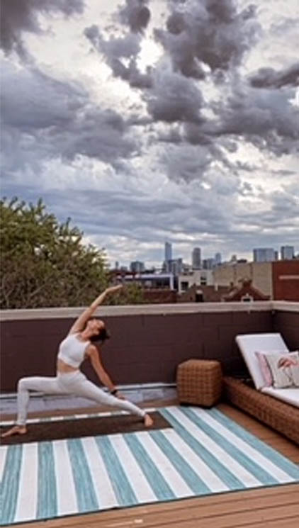

Meet Jacqueline
Jacqueline began her training in dance in Chicago, Illinois, specializing in jazz, contemporary, ballet, lyrical, modern, and musical theater. She carried that into college where she attended The University of Iowa, receiving degrees in Dance, Business, and Spanish, while also studying and receiving her yoga teaching certification from James Miller Yoga. Since moving out to the California, Jacqueline has danced professionally throughout the Los Angeles area, including numerous events with the LA Follies. She has trained in various contemporary companies, most recently with Emmy winning choreographer Tessandra Chavez, and also with the Emmy winning choreographing duo Christopher “Pharside” Jennings and Krystal “Phoenix” Meraz. She is currently performing at Disneyland and most recently workshopped and mounted a brand new offering at the world famous park, Magic Happens.
Dance
Yoga
Beginning dance at the age of three, Jacqueline always knew
this was her passion. She has now been dancing
professionally for the last five years,
and has no plans of stopping!
After recieving her yoga teaching certification, Jacqueline
has been a practicing yogi ever since. She is currently
teaching rooftop yoga classes throughtout
the Chicagoland and Orange County areas.